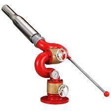

소방용수 모니터는 물분무 커버리지 제공 또는 물-포 용액 적용에 사용될 수 있다. 이들은 고정식 델루지 시스템을 보충하기 위해 제공될 수 있다. 모니터의 설계는 위치, 공급 배관의 크기, 제어 밸브의 배치를 고려해야 한다. 모니터는 원격 또는 로컬로 작동될 수 있다. 로컬에서 작동하도록 배치된 모니터는 접근 도로가 제공되어야 하며, 이는 보호가 필요한 부분에서 멀리 있고 모니터가 자동/원격 작동되지 않는 한 복사열의 영향으로부터 운전자를 보호하도록 위치한다. 모니터가 그 모니터로 보호하는 부분의 임의의 지점에 미칠 수 있도록 각 모니터는 수평 및 수직 평면에 충분히 움직일 수 있어야 한다. 모니터를 특정 위치에 고정하기 위한 수단이 있어야 한다. 각 모니터는 제트 및 스프레이 상태로 방출할 수 있어야 한다. 모니터의 위치 및 방출 특성은 모니터로부터 요구되는 역할 및 노출보호와 지역 환경 조건에 맞게 선택되어야 한다. 원격으로 작동될 수 있는 모니터는 작동 시 부상이나 탈출 도로를 방해할 수 없도록 배치해야 한다. 로컬 수동 오버라이드 컨트롤이 제공되어야 한다.
